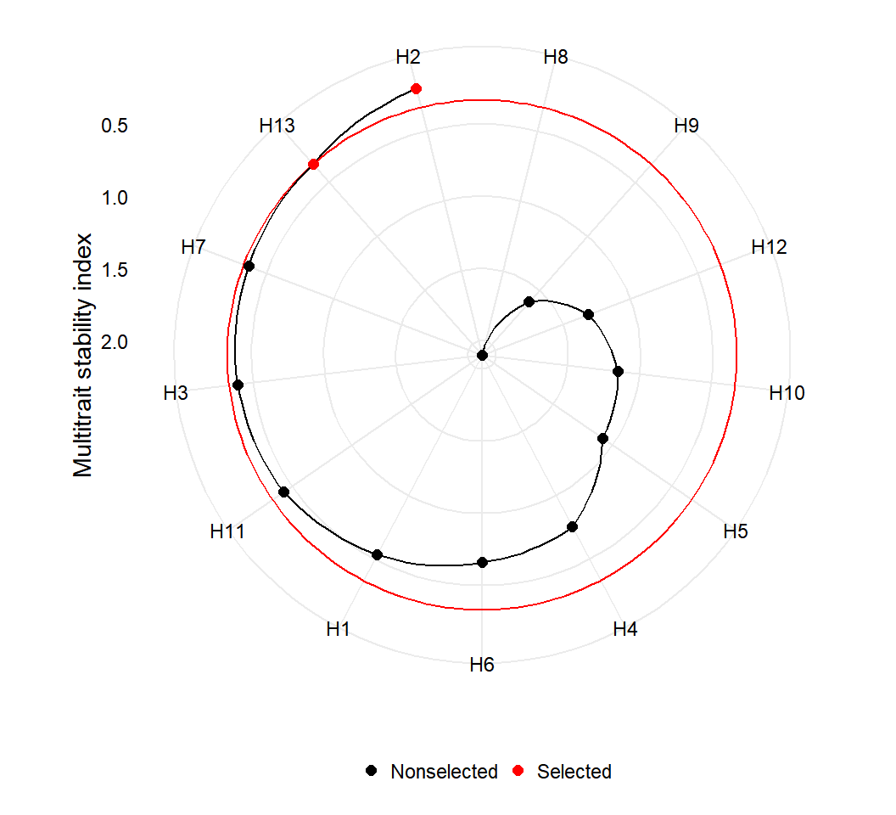
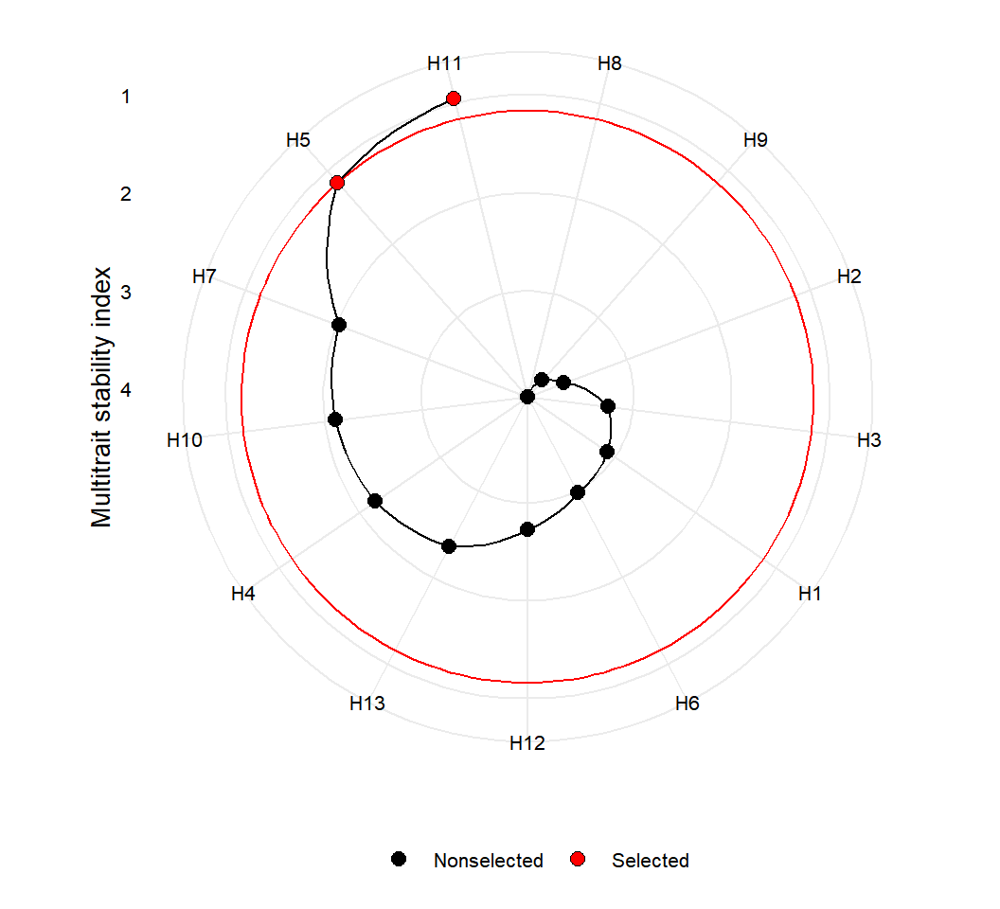
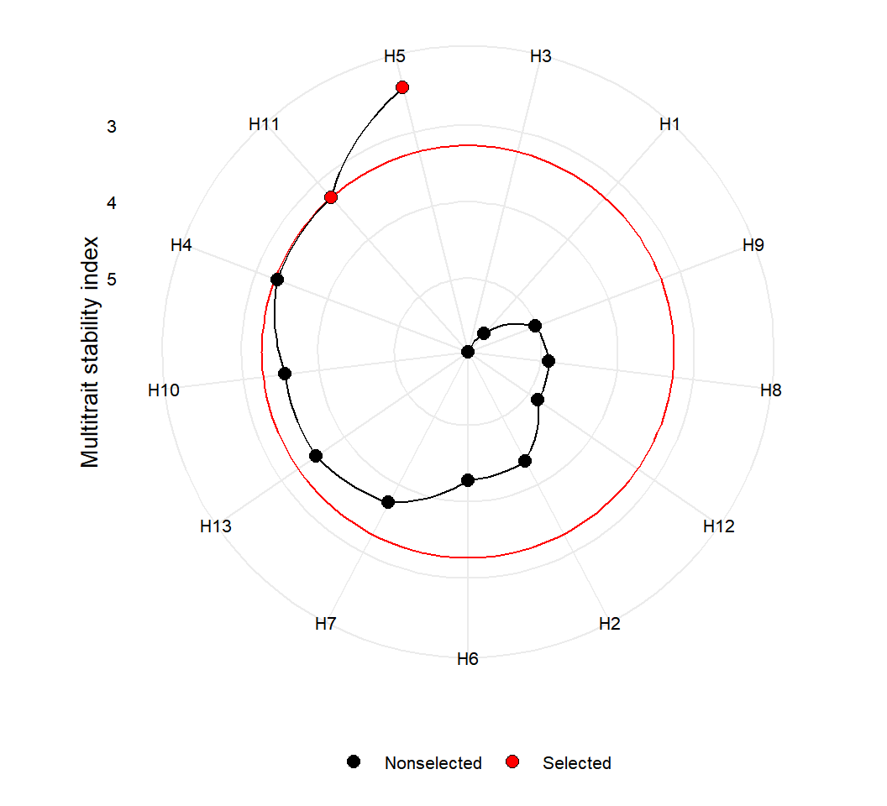

vignettes/vignettes_indexes.Rmd
vignettes_indexes.RmdIn this section we will use the data examples data_ge and data_ge2 provided in the metan package. For more information, please, see ?data_ge and ?data_ge2. Other data sets can be used provided that the following columns are in the dataset: environment, genotype, block/replicate and response variable(s).
The FAI-BLUP is a multi-trait index based on factor analysis and ideotype-design recently proposed by Rocha, Machado, and Carneiro (2018). It is based on factor analysis, when the factorial scores of each ideotype are designed according to the desirable and undesirable factors. Then, a spatial probability is estimated based on genotype-ideotype distance, enabling genotype ranking (Rocha, Machado, and Carneiro 2018). The BLUPs from genotypes are obtained with the function gamem_met() and then the function fai_blup() is used to compute the FAI-BLUP index.
library(metan)
FAI %
gamem_met(ENV, GEN, REP, c(KW, NKE, PH, EH)) %>%
fai_blup(DI = c("max, max, max, min"),
UI = c("min, min, min, max"),
SI = 15)plot(FAI)

The function mtsi() is used to compute the multi-trait stability index (MTSI) proposed by Olivoto et al. (2019). The first argument is a model of the class waasb or waas. It is possible to compute the MTSI for both WAASB -stability only- and WAASBY -simultaneous selection for mean performance and stability.
In the following example, the selection of stable genotypes will consider five traits, namely, KW, NKE, PH, EH, and TKW. Note that the output of the function waasb() is passed to the function mtsi() by the forward-pipe operator %>%. Finally, the MTSI index is plotted using the function plot().
MTSI_index %
waasb(ENV, GEN, REP,
resp = c(KW, NKE, PH, EH, TKW)) %>%
mtsi(verbose = FALSE, index = "waasb")# Correlation matrix print_table(MTSI_index$cormat, rownames = TRUE)
# Principal compoment analysis print_table(MTSI_index$PCA)
# Factor analysis print_table(MTSI_index$FA)
# Loadings after varimax rotation print_table(MTSI_index$finish.loadings)
# Scores for genotypes print_table(MTSI_index$scores.gen)
# Selection differential for the 'waasb' index print_table(MTSI_index$sel.dif)
# Selection differential for the variables print_table(MTSI_index$sel.dif.var)
plot(MTSI_index)

The following code considers that higher values for KW, NKE, TKW are better, and lower values for PH and EH are better. By using wresp = 65, the simultaneous selection for mean performance and stability will prioritize the mean performance (mean of the variables) rather than their stability across environments.
MTSI_index2 %
waasb(ENV, GEN, REP,
resp = c(KW, NKE, PH, EH, TKW),
mresp = c(100, 100, 0, 0, 100),
wresp = rep(65, 5)) %>% # Default is 50
mtsi()# Correlation matrix print_table(MTSI_index2$cormat, rownames = TRUE)
# Principal compoment analysis print_table(MTSI_index2$PCA)
# Factor analysis print_table(MTSI_index2$FA)
# Loadings after varimax rotation print_table(MTSI_index2$finish.loadings)
# Scores for genotypes print_table(MTSI_index2$scores.gen)
# Selection differential for the 'waasby' index print_table(MTSI_index2$sel.dif)
# Selection differential for the variables print_table(MTSI_index2$sel.dif.var)
plot(MTSI_index2)

Rendering engine
This vignette was built with pkgdown. All tables were produced with the package DT using the following function.
library(DT) # Used to make the tables
# Function to make HTML tables
print_table Bp>', buttons = c('copy', 'excel', 'pdf', 'print')), ...) %>%
formatSignif(columns = c(1:ncol(table)), digits = 3)}Olivoto, T., A. D. C Lúcio, J. A. G. Da silva, B. G. Sari, and M. I. Diel. 2019. “Mean performance and stability in multi-environment trials II: Selection based on multiple traits.” Agronomy Journal 111 (6): 2961–9. https://doi.org/10.2134/agronj2019.03.0221.
Rocha, João Romero do Amaral Santos de Car, Juarez Campolina Machado, and Pedro Crescêncio Souza Carneiro. 2018. “Multitrait index based on factor analysis and ideotype-design: proposal and application on elephant grass breeding for bioenergy.” GCB Bioenergy 10 (1): 52–60. https://doi.org/10.1111/gcbb.12443.